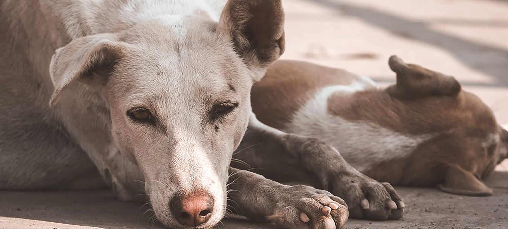
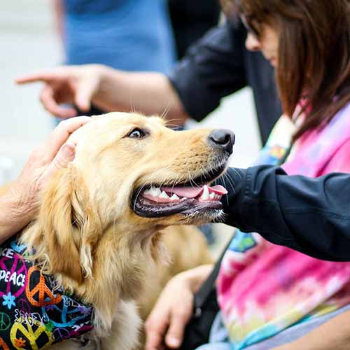

ABOUT US
Arnprior and District Humane Society is a non-profit organization serving the town of Arnprior and surrounding area. We are located 45 minutes west of Ottawa. We are a no-kill shelter.
Currently Closed due to the Covid 19 pandemic.
Regular Hours:
Monday to Saturday 12pm to 5pm
We are closed Sundays, statutory holidays, Easter Monday, and the August Civic holiday.

MANDATE
- Rescue, house and care for lost, stray or abandoned pet animals.
- Reunite lost pets with their families.
- Find appropriate homes for all our animals through adoption.
- Provide veterinary care using local animal hospitals for sick or injured animals housed at the shelter.
- Educate the public about the importance of responsible pet ownership by having pets spayed/neutered and micro-chipped.
- Assist in the investigation and prosecution of any offences of The OSPCA Act of Ontario and any reports of animal abuse.
WANT TO HELP?

Donations help:
- transportation fees
- veterinary fees
- spayed and neutering procedures
- vaccines
- food supplies
- bedding and toys
Your donations will help provide the care abandoned animals need until a suitable home is found for them. Please consider donating your time or gently used toys or bedding, or buying pet food to donate. Contact us to find out more about volunteering opportunities.
DonateMORE ON US


